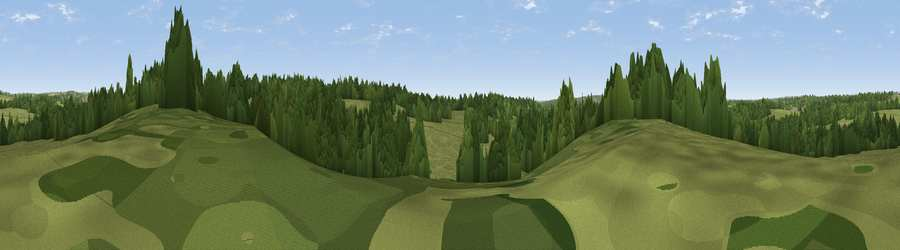

Breach Hill
#43901 in England · top 88% of its area beats it · near CurdridgeThe view, rendered

A 360° render of this exact spot computed from the terrain model, tree cover and land cover — summer colours, afternoon light, calibrated against photographs of famous viewpoints. Real trees, hedges and buildings will differ in detail.
The panorama
Grey silhouette: terrain skyline in each direction (720 bearings, Earth curvature and refraction included). Dashed green: skyline with trees (+15 m) and buildings (+8 m) as obstacles. Blue strip: how far the ground is visible on each bearing.
Where the view opens
Wedge length = distance to the farthest visible ground on that bearing (vegetation-aware). Rings at 10, 25 and 50 km.
What fills the view
56% grassland · 38% woodland · 3% built-up · 3% cropland
Angular shares of the visible panorama (visual magnitude), not map area. Landscape diversity 0.39 (0–1 Shannon).
Key numbers
More beautiful places nearby
The staircase of upgrades: each row has a higher view potential than everything closer. Driving times are estimates from straight-line distance, calibrated against real road routing — check an actual route before setting out.
| Place | Direction | Drive | Score |
|---|---|---|---|
| Winters Hill | N · 2 km | ~6 min | 41.3 |
| Viewpoint near Lower Swanwick | SW · 6 km | ~12 min | 42.4 |
| Viewpoint near Knowle | SSE · 6 km | ~13 min | 44.9 |
| Stephen's Castle Down | NNE · 6 km | ~13 min | 52.0 |
| Viewpoint near Droxford | ENE · 7 km | ~15 min | 61.7 |
| Beacon Hill | NE · 11 km | ~20 min | 71.7 |
| Viewpoint near Meonstoke | ENE · 13 km | ~23 min | 74.8 |
| Viewpoint near Southwick | SE · 14 km | ~25 min | 76.6 |
50.93058, -1.24851 · source: osm peak · position refined by local search. Computed location — check access rights before visiting.